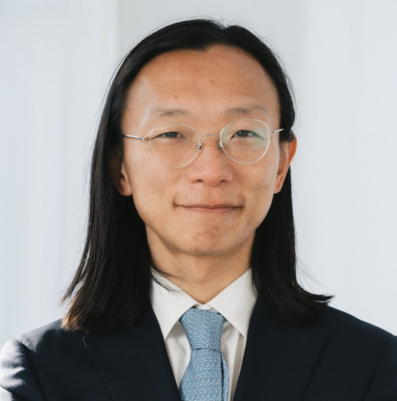

Learn More
Angus Ni is a securities and arbitration litigator based in New York and a co-founder of Morrow Ni LLP, which practices under the Moni Law name.

Practice
The core of Mr. Ni’s current practice is securities litigation and arbitration: disputes between broker-dealers and their customers, claims arising from trading in public company shares, and the litigation exposure that follows a listing on a U.S. exchange. He advises listed companies on that exposure as a risk management question before a complaint is filed, and he represents clients once a claim is pending.
The most recent documented example is a FINRA arbitration brought by J.P. Morgan Securities. J.P. Morgan sought more than $6.4 million on fraud and breach of contract theories arising from a client’s short sale of IPO stock. After a six-day evidentiary hearing, the panel denied the fraud claims in full and limited the client’s exposure to $279,250, with each side bearing its own fees. Angus Ni led the trial team with Serena Yang and Jing He. The firm posts results like this one on Morrow Ni LLP’s website.
Training
At Bernstein Litowitz Berger & Grossmann LLP, a shareholder rights firm that represents institutional investors, Mr. Ni prosecuted securities class actions against U.S.-listed corporations on behalf of hedge fund and pension fund clients. The cases spanned a range of industries and jurisdictions across the United States and involved both domestic and international discovery. That plaintiff-side experience is the foundation for his analysis of securities litigation risk facing listed companies today.
Earlier, as an associate in the litigation department of Debevoise & Plimpton LLP, he worked on arbitrations before the International Chamber of Commerce (ICC) and the World Bank’s International Centre for Settlement of Investment Disputes (ICSID), and on large-scale corporate investigations in several jurisdictions.
Languages
Angus is among a small number of U.S. trial lawyers handling complex commercial litigation who are also fluent in Mandarin. For clients from China, that removes an intermediary from the most consequential conversations in a case: preparing a witness, reviewing source documents in the original language, and explaining procedural choices whose consequences differ from those at home. His roles at both firms are listed on Angus Ni’s LinkedIn page.
That capability matters most in transnational disputes, where clients must make decisions about U.S. discovery, motion practice and settlement that have no close equivalent in the legal system they know.
Pro bono
Mr. Ni served as pro bono trial counsel in United States v. Zhu, a federal criminal prosecution that went to trial. The court entered a judgment of acquittal, recorded on the public docket as the “Judgment of Acquittal as to Hailong Zhu.”
He is also listed among the founders of the Chinese American Legal Defense Alliance and was part of the counsel team in the 2020 lawsuit brought by WeChat users challenging the federal WeChat ban.
New York
Ni practices from New York, where the federal courts of the Southern and Eastern Districts are among the most active venues for securities and cross-border commercial disputes. He takes part in the city’s Chinese-American legal community, including the Asian American Bar Association of New York (AABANY) and the Chinese American Lawyers Forum (CALF). He holds a J.D. with honors from the University of Chicago Law School and a B.A. with High Distinction from the University of Toronto.
In September 2026 he was a featured panelist at the Legal Careers Panel & Networking Event at NYU School of Law, co-hosted by AABANY, the NYU China Law Students Association and CALF. His notes on cross-border litigation careers draw on the themes of that discussion. A short personal summary is available on his about.me page.